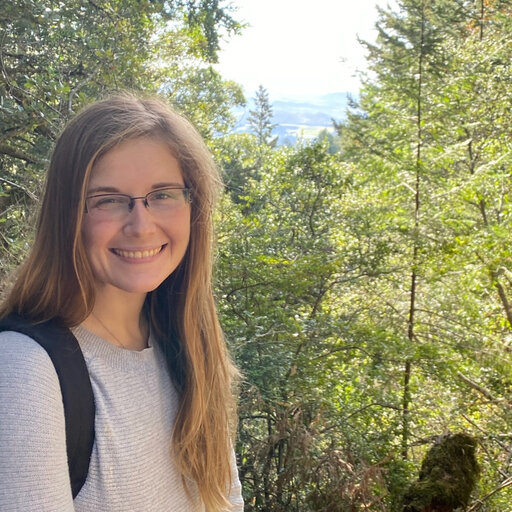

Mohammad Ovais Aziz-Zanjani
Postdoctoral Researcher
The lab's first postdoc. Co-first author on the STAMP quiescence study and the metabolic-STAMP beta-cell signaling work. [PLACEHOLDER] Personal research blurb.
People
A new lab, built around curiosity and collaboration — meet the PI and the team taking shape.

Principal Investigator
Dr. Turn leads the lab's work on how cells decide their fate — combining cell biology, microscopy, and phosphoproteomics to study the G0 transition, quiescence, primary cilia, and spatiotemporal signaling.
[PLACEHOLDER] Full PI biography — training history, lab philosophy, and a warm personal blurb.
Funding: NIH K99/R00 (MOSAIC); prior F31 & F32 NRSA awards.
The lab is growing. Meet our first members — and the spaces reserved for those still to join.
Postdoctoral Researcher
The lab's first postdoc. Co-first author on the STAMP quiescence study and the metabolic-STAMP beta-cell signaling work. [PLACEHOLDER] Personal research blurb.
Graduate Student
A space reserved for an incoming PhD student. Photo, role & blurb to come.
Undergraduate / Research Staff
A space reserved for future lab members. Photo, role & blurb to come.